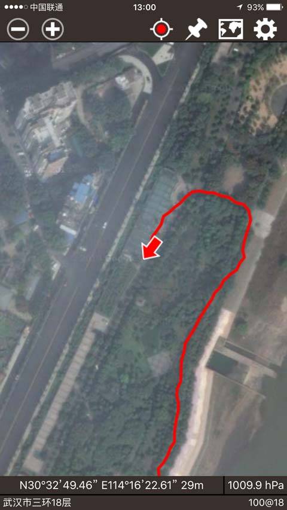

|
| 首页 | GeoTIFF | 今日花园Maps | OruxMaps | OZI | 资源 | 软件 | 联系 |
| 当前位置：今日花园Maps |
|
今日花园 Maps 是一款在苹果手机或者平板(IOS 8.0以上版本)上使用的GPS地图软件，与安卓系统上使用的OruxMaps软件类似，软件有GPS定位和轨迹追踪记录功能，能导入KMZ、KML或者GPX格式的航线、航点、路径文件，有地图纠偏功能，对于国内有偏移的地图也能正常使用。软件可使用在线地图(包括百度、高德、谷歌地图)和离线地图，其中离线地图使用的是MBTiles格式。 有关 今日花园 Maps 软件的详细信息，请看：今日花园 Maps 在线帮助 软件截图如下所示：（图中使用的是18层分辨率的地图） |



|
下面主要介绍软件的安装和MBTiles格式地图添加到苹果手机或者平板电脑上的步骤： 1) 在苹果 App Store 中搜索 今日花园 Maps 这款应用程序，这是一款价格6元人民币的收费软件，购买并安装这款软件。 2) 软件自带有世界3-9层离线平面地图，在软件的在线帮助中，还有许多免费地图资源供大家下载使用。 3) 在电脑上安装苹果的 iTunes 软件（微软的WINDOWS电脑或者苹果的MAC电脑都有相应版本的 iTunes 程序）。 4) 在电脑上打开 iTunes 程序，然后用USB数据线把苹果手机或者平板与电脑相连。如下图所示： |

|
5) 在 iTunes 程序中，依次找到“设备”---->“应用程序”---->“文件共享”，在文件共享的“应用程序”列表中找到“今日花园 Maps”，然后把地图文件添加到右边的“文稿”列表中。如下图所示： |
|
MBTiles格式的卫星地图数据包也可以在WINDOWS系统的电脑上使用。请先在电脑上安装OruxWin软件。 OruxWin软件的下载地址及使用说明请看：OruxWin在线帮助 需要制作MBTiles格式的卫星地图数据包的用户请到本站的淘宝店购买。 |
| www.todaygarden.net |
版权所有 2010-2020 今日花园 鄂ICP备13001523号 |